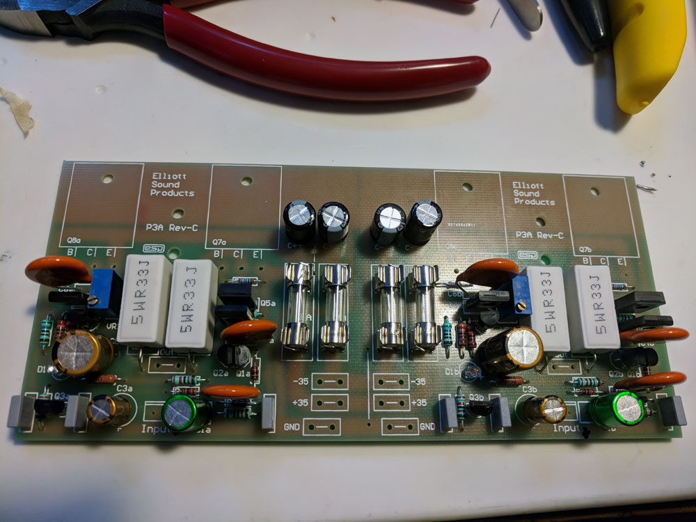

Stereo Amplifier.
Bluetooth BoxAmp.
Speakers.
Stereo Amplifier.
Bluetooth BoxAmp.
Speakers.
Stuff on this page is about the P3A amp.
I am trying to build an amplifier. I'm not looking to design one (I am not an electronics or audio
engineer), and so I looked on line for good choices. Not a lot available! At least not much I
could find that would sound decent and not require more technical knowledge than I have (or was
willing to learn). After trying a cheap "kit" that I found on Amazon, which I never got to work,
I found designs by Elliot Sound Products
in Australia. After reading through the site I looked for reviews online--there appear to be
many happy amplifier builders who use his designs! So I ordered the Printed Circuit Board (PCB)
for the P3A (rev3) Amplifier. This is an image of the board that I received (click the images
for a full-sized view):
Some information about the amp. It is a
Class AB Stereo amplifier
capable of up to 100 Watts per channel, depending on the power supply. I think mine will top out at around 60W
per channel, but more on that later. Here are the specs
from the Elliot Sound Products site:
| Gain | 27dB |
| Input Impedance | 24k |
| Input Sensitivity | 1.22V for 100W (8 ohms) |
| Frequency response 1 | 10Hz to 30kHz (-1dB) typical |
| Distortion (THD) | 0.04% typical at 1W to 80W |
| Power (42V supplies, 8 ohm load) 2 | 90W |
| Power (35V supplies, 8 ohm load) 3 | 60W |
| Power (35V supplies, 4 ohm load) | 100W |
| Hum and Noise 4 | -73 dBV unweighted |
| DC Offset | < 100mV |
|
1. The frequency response is dependent on the value for the input and feedback
capacitors, and the above is typical of that when the specified values are used.
The high frequency response is fixed by C4, and this should not be changed.
| |
|
2. Operation into 4 ohm loads is not recommended with the 42V supplies. Peak
dissipation will exceed 110W in each output transistor, leaving no safety margin
with typical inductive loads. All supply voltages are nominal, at no load - your
transformer may not be capable of maintaining regulation, so power may be
slightly less than shown.
| |
|
3. This figure is typical, and is dependent on the regulation of the power supply
(as are 1 and 2, above). Worst case power with 8 ohm loads is about 50W, but the
supply will be seriously inadequate if the power falls that far.
| |
|
4. This is an extremely pessimistic test, because the bandwidth extends well above and below anything that is audible. The
response of my meter extends from around 3Hz to well over 100kHz, so the measured
noise is much greater than would be the case with any weighting network.
|
After receiving the board, I gained access to Rod Elliot's instructions for assembly, along with
general amplifier design and creation information. More than I expected! This info included
a bill of materials, so I started ordering the components. The first items to arrive were the
fuses and fuse clips:
Not too exciting, I know. But I did get to check the fit, to make sure I got the right parts. (I had a hard time
figuring out if the fuse clips were correct from information online). I checked, and the clips and fuses fit!
Here is proof:
I received all of the parts within a week or so. The capacitors, most of the resistors and some of the transistors came from Mouser Electronics and the rest of the transistors came from Digikey. The fuses, clips and the 5W resistors were ordered through Amazon. (You don't need me to link to Amazon, do you?) I messed up and ordered a few too many of the 5W resistors. I needed 4 and thought I ordered 4. I ordered 4 bags of 15 each. Oops. Luckily one of the bags was delayed so I was able to cancel that one. So I only got 45 instead of 4!
First step--put in the resistors (nothing soldered yet). I test each one before putting it in the board. Since I
had way too many 5W resistors, I used a few to test different fits. I am a bit concerned about the wattage
rating of some of my reistors; a few were specified as either 1/2 Watt or 5 Watts. But the rest had no power
rating. Some of the ones I used were rated for 1/3 of a Watt, while some were 0.4 Watts. Hope that's enough!
They look smaller than those I have seen in pictures of other P3A builds. Update:In his description of
the amplifier, Rod Elliot says: All resistors should be 1/4W or 1/2W 1% metal film for lowest noise, with the
exception of R9, R10 and R15 which should be 1/2W types, and R13, R14 must be 5W wirewound. So I think I'm OK.
Here's the board with all of the resistors on it (and some of the 5W resistors lying around in the back):
I soldered the resistors, then placed the capacitors. My concern with the capacitors is also about rating and
size. The ceramic capacitors (the beige discs in the photo) are larger than those in the assembly instructions.
They have the correct capacitance, but are rated for 1K Volts (!). I suspect the "proper" ones are rated for
something much smaller like 50V or so. I think that is OK. I hope so. Anyway, the bottom of the board, with
the resistors and capacitors soldered, is in the next picture (don't judge my soldering skills, please), and the
photo afer that shows the top of the board with the R's and C's visible:
The next step was to add the semiconductors--the transistors and green LED's. And the fuse clips and fuses
(finally!). I did that, except for the big output transistors. They need to be mounted to a heat sink as they
are the components that will get hot. Anyway, this is what the board looks like now:

So now I decided to check on the power supply that I have been saving--I salvaged it from a mini stereo system
I used to own. I was sure that it was +/-35 volts. It is actually +/- 45 Volts--and Rod Elliot
(Elliot Sound Products is his site) advises that 42V is the
absolute maximum and 35 is better. So I spent some time researching what I could do. I decided to build a
buck converter. So I ordered more parts. My
original concern is that I am using a laminated core transformer
(audiophiles prefer torroidal transformers). Now,
added to that concern, I am worried that I am also effectively turning the power supply into a
switching power supply. Another
audiophile sin! We'll see. I can always replace the power supply later.
This is not a pipe. Don't trust me. This is the about page.